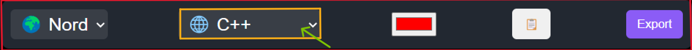
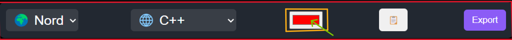
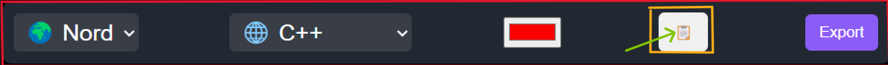

🎉About CodeGlow🎉
This website is a simple yet powerful online code editor that allows users to write, edit, and format code in a visually appealing manner. It supports multiple programming languages and provides customization options to enhance the coding experience.
Key Features:
- Clean and Responsive UI
- Dark-themed interface for better readability.
- Responsive design to work on different screen sizes.
- Syntax Highlighting with Prism.js
- Supports multiple programming languages:
- C++
- JavaScript
- Python
- Provides clear and structured code formatting.
- Supports multiple programming languages:
- Theme Customization
- Users can switch between different themes:
- Nord (Cool Blue Theme)
- Dark Mode
- Light Mode
- Users can switch between different themes:
- Code Editor with Live Editing
- Users can write and edit code in real-time.
- Syntax highlighting updates dynamically.
- Language Selection
- Dropdown menu to select the programming language.
- Code updates according to the selected language.
- Copy to Clipboard
- One-click button to copy the written code.
- Background Color Customization
- Users can change the background color of the code editor.
- Export Code
- Export the entire code-box in two formats:
- As an image (PNG format) using html2canvas
- As an HTML file with inline styles
- Export the entire code-box in two formats:
- Navigation Bar
- Simple navigation for easy access to Home and Documentation pages.
- Fully Functional Footer
- Displays copyright information and credits the developer.
Use Cases:
✅ Learning & Practicing Code – Beginner-friendly for writing and testing code snippets.
✅ Quick Code Sharing – Copy and export code easily for sharing with others.
✅ Customizable Code Snippets – Change themes, background colors, and formats.
Basic Details
This Nord Dropdown is used to change the text color.
This language selector is used to choose the programming language you want.
This is a color input to select the background color you want.
This button is used to copy the code to the clipboard.

This button is used to export an image of the code with a background.